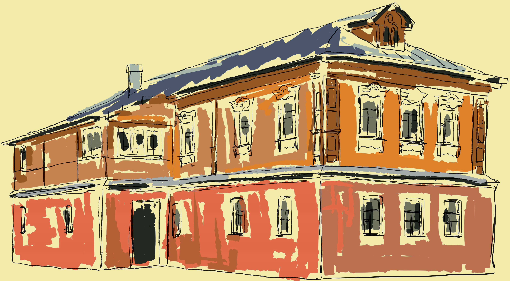

УСАДЬБА КУЗНЕЦА НАХОДИТСЯ НА ТЕРРИТОРИИ ЭТНОГРАФИЧЕСКОГО
ЦЕНТРА.
НА ТЕРРИТОРИИ УСАДЬБЫ ДЛЯ ПОСЕЩЕНИЯ ОТКРЫТА ДЕЙСТВУЮЩАЯ
КУЗНИЦА,
В КОТОРОЙ ВОССОЗДАНО УСТРОЙСТВО НЕБОЛЬШОЙ УНИВЕРСАЛЬНОЙ КУЗНИЦЫ:
ГОРН, СЛОЖЕННЫЙ ИЗ КАМНЕЙ ИЛИ КИРПИЧА С ЖЕЛЕЗНЫМ ВЫТЯЖНЫМ ЗОНТОМ ,
ДВУРОГАЯ НАКОВАЛЬНЯ, ТИСКИ И ИНСТРУМЕНТЫ: НЕСКОЛЬКО РУЧНИКОВ, КУВАЛДА,
КЛЕЩИ С РАЗНЫМИ ГУБКАМИ, ЗУБИЛА. ПРИ ПОМОЩИ ЭТОГО НЕХИТРОГО ИНСТРУМЕНТА
СОВРЕМЕННЫЕ ИСКУСНЫЕ МАСТЕРА НА ГЛАЗАХ ПОСЕТИТЕЛЕЙ СОЗДАДУТ УНИКАЛЬНЫЕ ОБРАЗЦЫ
КУЗНЕЧНОГО ИСКУССТВА, КОТОРЫЕ ВСЕ ЖЕЛАЮЩИЕ СМОГУТ ПРИОБРЕСТИ В СУВЕНИРНОМ МАГАЗИНЕ МУЗЕЯ.
В XIX – НАЧАЛЕ XX В. ОКРЕСТНОСТЯХ СЕЛА КОЛОМЕНСКОГО БЫЛО НЕСКОЛЬКО КУЗНИЦ. КУЗНЕЦЫ ИЗГОТОВЛЯЛИ СЕЛЬСКОХОЗЯЙСТВЕННЫЕ ОРУДИЯ И ДЕТАЛИ, ИНСТРУМЕНТЫ ДЛЯ СТОЛЯРНЫХ И ПЛОТНИЧНЫХ РАБОТ, ПРЕДМЕТЫ КРЕСТЬЯНСКОГО БЫТА: КОТЛЫ И СКОВОРОДЫ, ТАГАНЫ И УХВАТЫ, НОЖИ И НОЖНИЦЫ, СВЕТЦЫ И ПОДСВЕЧНИКИ, ОКОВАННЫЕ МЕТАЛЛОМ СУНДУКИ. ТАКЖЕ В РУССКИХ ДЕРЕВНЯХ СЧИТАЛОСЬ, ЧТО КУЗНЕЦ МОЖЕТ НЕ ТОЛЬКО ВЫКОВАТЬ ПЛУГ ИЛИ ОКОВАТЬ СУНДУК, НО И ВРАЧЕВАТЬ БОЛЕЗНИ, УСТРАИВАТЬ СВАДЬБЫ
В ДОМЕ КУЗНЕЦА РАЗВЕРНУТА ЭКСПОЗИЦИЯ, КОТОРАЯ ЗНАКОМИТ ПОСЕТИТЕЛЕЙ С ПРЕДМЕТАМИ ПОВСЕДНЕВНОГО БЫТА ИЗ МЕТАЛЛА XVII – НАЧАЛА XX ВВ. И ОСОБЕННОСТЯМИ БЫТА РЕМЕСЛЕННИКА КОНЦА XIX – НАЧАЛА XX ВВ. В ПРИГОРОДЕ МОСКВЫ.